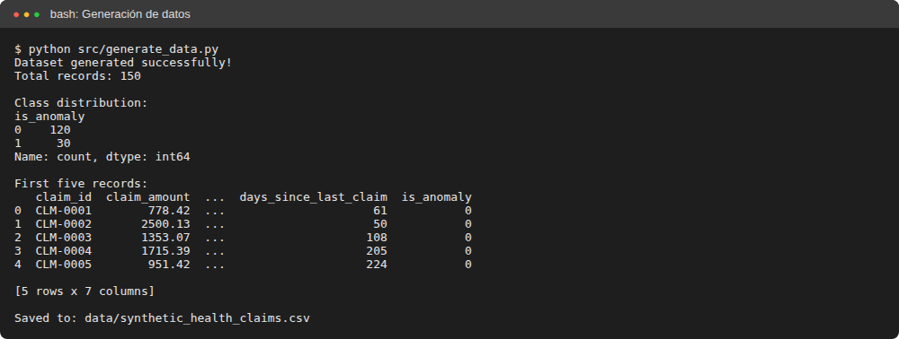
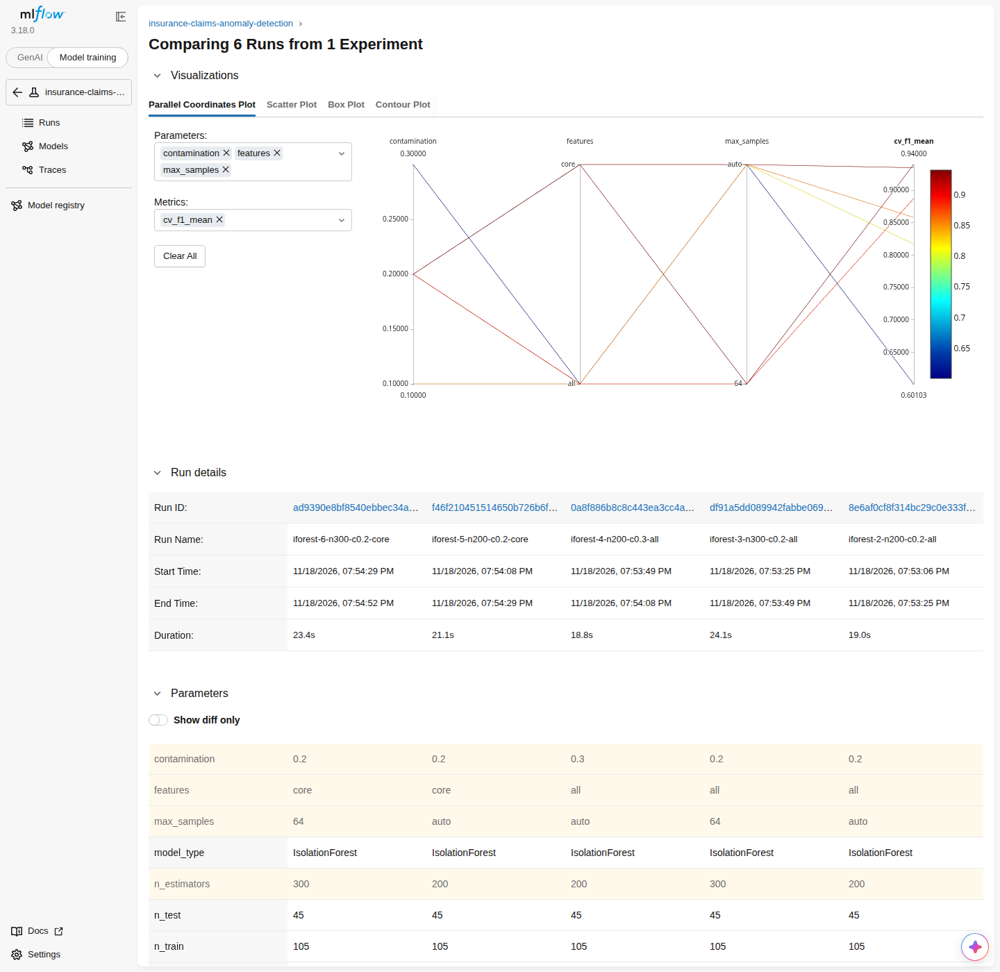
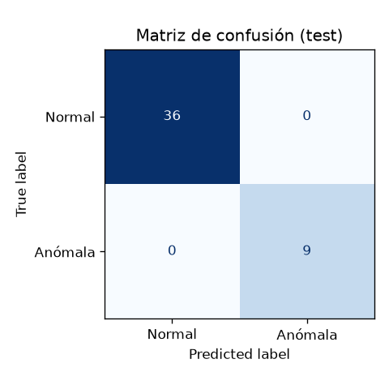
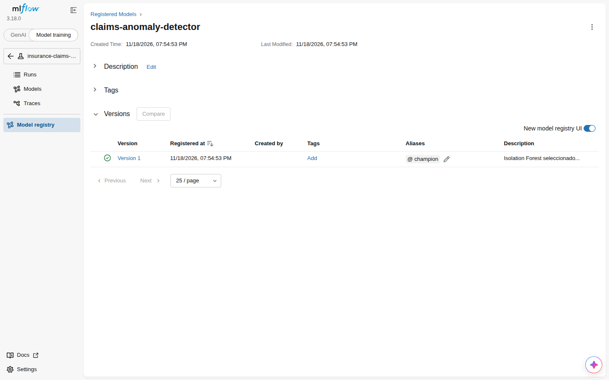
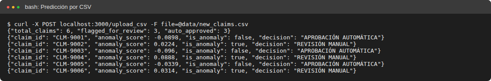

Pipeline de ML de extremo a extremo para reclamaciones de seguros
- Isolation Forest, MLflow y BentoML
- Grupo: Ricardo Acuña, César Pajuelo, Angello Soldi, Josué Velo, Paolo Medrano
El problema: un flujo de revisión completamente manual
- Cada reclamación pasa por el comité, aunque la mayoría es rutinaria.
- El modelo actúa como filtro previo: aprueba lo normal y deriva lo atípico al equipo de investigación.
- Resultado: menos carga del comité y foco en los casos de riesgo.

Datos: la anomalía vive en tres variables
- Lo anómalo combina montos altos, muchos servicios y reclamos muy seguidos.
- Edad y proveedor se distribuyen igual en ambas clases: no aportan señal.
- Incluir variables sin señal diluye el aislamiento del bosque.

Experimentación trazable en MLflow
- Cada run guarda parámetros, métricas, matriz de confusión y modelo.
- El umbral (contamination) equilibra fraude no detectado frente a carga de revisión.
- Un umbral cercano a la tasa real de anomalías da el mejor equilibrio.

Mejora: menos ruido y validación honesta
- Quitar edad y proveedor sube el F1 en k-fold de 0.887 a 0.940.
- K-fold estratificado 5x3 elige el modelo sin mirar el test.
- El F1 de 1.0 en test es suerte del split; k-fold da 0.94 con desviación 0.08 y brecha mínima con train: no hay sobreajuste.

Registro con alias champion
- El servicio apunta al alias champion, no a una versión fija.
- Promover un modelo nuevo es reasignar el alias sin tocar el servicio.

Servicio BentoML
- Carga masiva por CSV o JSON, validada antes de llegar al modelo.
- Los casos marcados reproducen el patrón de riesgo: monto alto, muchos servicios, pocos días.
- El score permite priorizar la cola de revisión.

Conclusiones
- Pipeline completo y reproducible: datos, experimentos, registro y servicio.
- La selección de variables pesó más que los hiperparámetros.
- El umbral es una decisión de negocio: recall frente a carga del comité.
- Siguiente paso: datos reales con solapamiento, monitoreo de drift y explicabilidad.